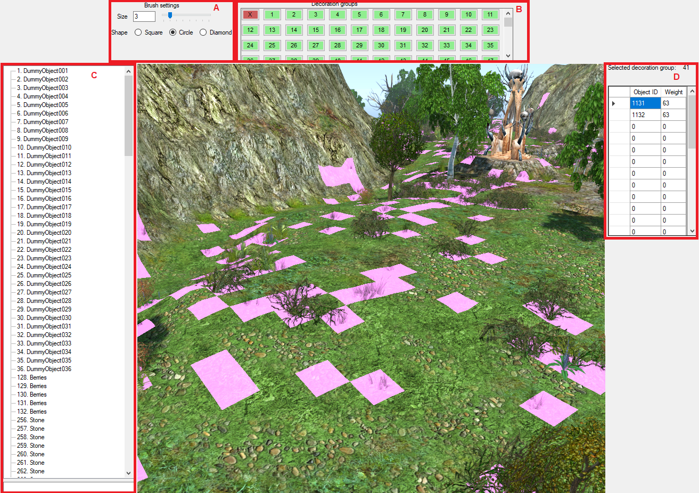

Aside from entities, there's one more type of objects you can place on the map - decorations. These can't interact with any other objects on the map, and are there purely as eye candy.
This is similar to the brush in Terrain and Textures mode. See Map Editor - Terrain mode for parameter details.
Clicking on decoration with right mouse button will select the group this decoration belongs to.
There are 254 decoration groups per map, though usually much less of them are needed. If a decoration group has any object assigned to it, it is colored
A special empty group X, denoted by
Selecting any group (except group X) from the panel will show objects assigned to it in the selected group panel.
You can choose decorations to include with selected decoration group in this panel.
When you select a decoration group, a grid of objects is displayed. Each row in the grid contains object ID and its weight in the group. For every row in the group, a decoration with given object ID has a chance of spawning on every terrain cell that is painted with the selected group (weight 0 - 0% chance, weight 255 - 100% chance). Up to 30 rows per decoration can be defined per group.
You can freely modify decoration group's object IDs and weights.